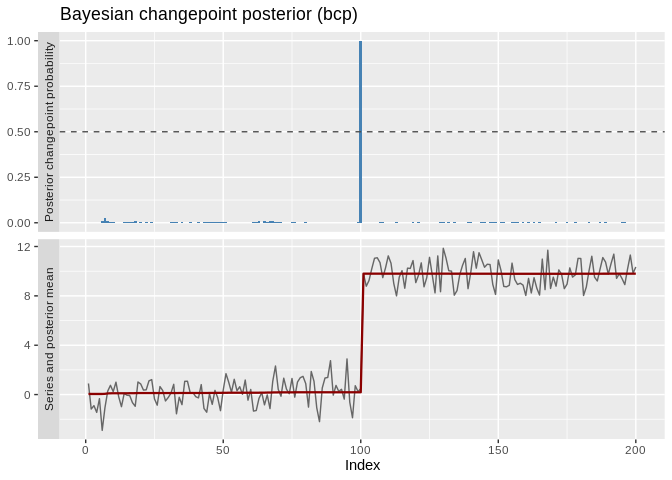
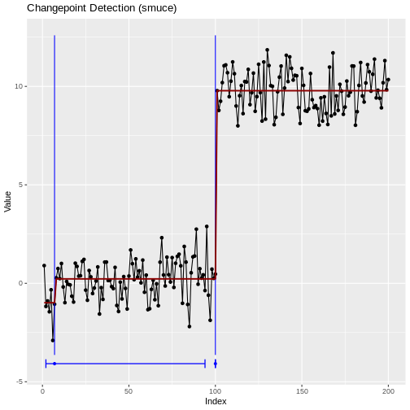
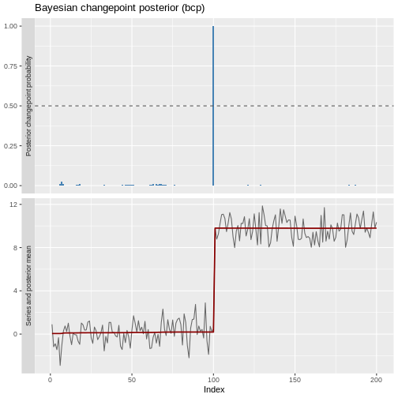
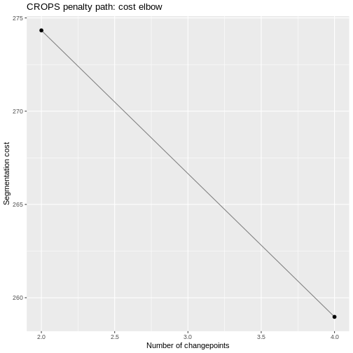
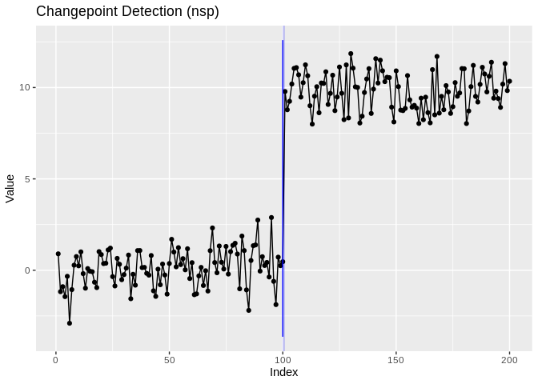
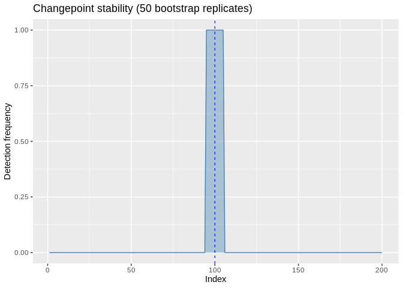
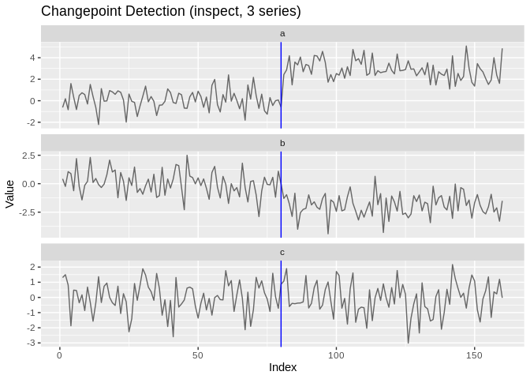
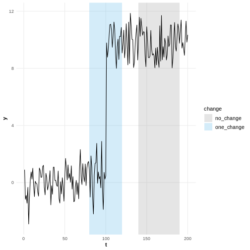
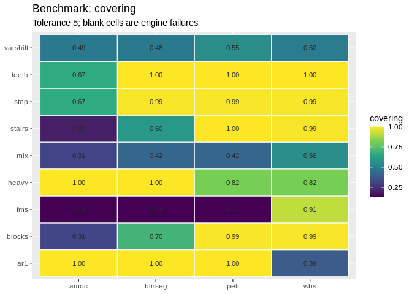
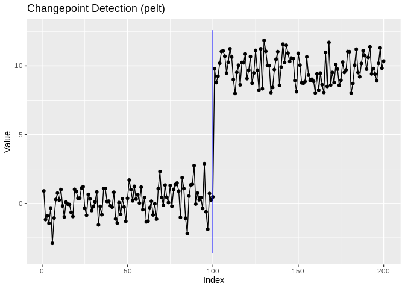

One interface. 31 changepoint methods. Every result tidy, every result plottable.
R has excellent changepoint packages, but each one takes its own input, returns its own result object, and has its own idea of a plot — so switching methods means rewriting your analysis. ggchangepoint puts them behind one interface: cpt_detect() runs any of 31 detection methods, every result comes back as the same tidy ggcpt object, and autoplot() draws it, with confidence intervals, posteriors, penalty paths and accuracy metrics when you need them.
Installation
Install the released version from CRAN:
install.packages("ggchangepoint")Or the development version from GitHub:
# install.packages("devtools")
devtools::install_github("PursuitOfDataScience/ggchangepoint")Quick start
Generate a series with a mean shift:
Detect changepoints with the unified cpt_detect():
res <- cpt_detect(x, method = "pelt", change_in = "mean")
res
#> ggcpt (changepoint detection result)
#> Method: pelt
#> Change in: mean
#> Changepoints found: 1
#> CP convention: left
#> Penalty: MBIC
#> Series length: 200
#>
#> Changepoints:
#> # A tibble: 1 × 2
#> cp cp_value
#> <int> <dbl>
#> 1 100 0.467The result is a ggcpt S3 object, so the broom verbs work on it: tidy() gives one row per changepoint, glance() a one-row model summary, and augment() the original series with segment labels, fitted values and residuals.
tidy(res)
#> # A tibble: 1 × 2
#> cp cp_value
#> <int> <dbl>
#> 1 100 0.467
glance(res)
#> # A tibble: 1 × 9
#> n n_changepoints method change_in penalty_type penalty_value cp_convention
#> <int> <int> <chr> <chr> <chr> <dbl> <chr>
#> 1 200 1 pelt mean MBIC NA left
#> # ℹ 2 more variables: total_cost <dbl>, runtime <dbl>Visualise with autoplot():
autoplot(res)
Why ggchangepoint
-
Detect with one call —
cpt_detect(x, method = "...")dispatches to 31 methods, from classic PELT to Bayesian online detection. -
Tidy everywhere — every method returns the same
ggcptobject, withtidy(),glance(), andaugment(). -
Plot everything —
autoplot()draws any result: changepoints, confidence intervals, fitted signals, posteriors, multivariate facets. - Trust the answer — compare methods side by side, sweep the penalty (CROPS), bootstrap stability, and score accuracy against ground truth.
| Family | Methods |
|---|---|
| Penalised / optimal partitioning | PELT · BinSeg · SegNeigh · AMOC · FPOP · CPOP (slope) · fastcpd (mean/var/AR/ARMA/GARCH) |
| Multiscale / search | WBS · WBS2 · TGUH · NOT · MOSUM · Isolate-Detect · SMUCE · HSMUCE (the last two with CIs) |
| Nonparametric / kernel | ED-PELT · E-Divisive / E-Agglo · kernel running stats · NP-MOJO · sequential CPM · self-normalisation |
| Bayesian | bcp posteriors · online BOCPD · BEAST model averaging |
| High-dimensional / multivariate | inspect · ocd · geomcp |
| Regression breaks / robust | Bai–Perron · segmented · EnvCpt · DeCAFS |
Run cpt_methods() for the live table with engines and installation status. Only three engines are required — changepoint, changepoint.np and ecp; every other engine lives in Suggests and is loaded on demand, so a plain install stays light.
Unified detection across engines
cpt_detect() dispatches to any supported method by name:
cpt_detect(x, method = "binseg", change_in = "mean")
#> ggcpt (changepoint detection result)
#> Method: binseg
#> Change in: mean
#> Changepoints found: 1
#> CP convention: left
#> Penalty: MBIC
#> Series length: 200
#>
#> Changepoints:
#> # A tibble: 1 × 2
#> cp cp_value
#> <int> <dbl>
#> 1 100 0.467
cpt_detect(x, method = "wbs", change_in = "mean")
#> ggcpt (changepoint detection result)
#> Method: wbs
#> Change in: mean
#> Changepoints found: 1
#> CP convention: left
#> Penalty: sSIC
#> Series length: 200
#>
#> Changepoints:
#> # A tibble: 1 × 2
#> cp cp_value
#> <int> <dbl>
#> 1 100 0.467
cpt_detect(x, method = "fpop", change_in = "mean")
#> ggcpt (changepoint detection result)
#> Method: fpop
#> Change in: mean
#> Changepoints found: 1
#> CP convention: left
#> Penalty: Manual = 17.846
#> Series length: 200
#>
#> Changepoints:
#> # A tibble: 1 × 2
#> cp cp_value
#> <int> <dbl>
#> 1 100 0.467Use cpt_methods() to see all available and planned methods with their engine packages and installation status:
cpt_methods()
#> # A tibble: 35 × 6
#> method change_in engine status target_release installed
#> <chr> <chr> <chr> <chr> <chr> <lgl>
#> 1 pelt mean, var, meanvar changep… avail… <NA> TRUE
#> 2 binseg mean, var, meanvar changep… avail… <NA> TRUE
#> 3 segneigh mean, var, meanvar changep… avail… <NA> TRUE
#> 4 amoc mean, var, meanvar changep… avail… <NA> TRUE
#> 5 np distribution changep… avail… <NA> TRUE
#> 6 ecp distribution (multivariate) ecp avail… <NA> TRUE
#> 7 fpop mean fpop avail… <NA> TRUE
#> 8 wbs mean wbs avail… <NA> TRUE
#> 9 wbs2 mean breakfa… avail… <NA> TRUE
#> 10 not mean, var, slope not avail… <NA> TRUE
#> # ℹ 25 more rowsDetection with uncertainty: confidence intervals and posteriors
SMUCE (smuce_wrapper(), via stepR) delivers a confidence interval for every changepoint location; Bai–Perron (strucchange_wrapper()) and broken-line regression (segmented_wrapper()) do the same for regression breaks. The intervals live in ci_lower/ci_upper columns and render with autoplot(show_ci = TRUE) or the geom_cpt_ci() layer:
res_smuce <- smuce_wrapper(x)
tidy(res_smuce)
#> # A tibble: 2 × 4
#> cp cp_value ci_lower ci_upper
#> <int> <dbl> <int> <int>
#> 1 7 -1.06 2 94
#> 2 100 0.467 100 100
autoplot(res_smuce, show_ci = TRUE, show_fit = TRUE)
Read the intervals, not just the locations: the genuine shift is pinned to a single index, while the spurious early changepoint carries an interval nearly a hundred observations wide — exactly the distinction a bare list of locations hides.
Bayesian engines return posterior probabilities instead: bcp_wrapper() (posterior probability of a change at every location), beast_wrapper() (Bayesian model averaging), and bocpd_wrapper() (online run-length posterior). Two dedicated displays accompany them — ggcpt_posterior() and ggcpt_runlength():
res_bcp <- bcp_wrapper(x, seed = 1)
tidy(res_bcp)
#> # A tibble: 1 × 3
#> cp cp_value posterior_prob
#> <int> <dbl> <dbl>
#> 1 100 0.467 1
ggcpt_posterior(res_bcp)
The penalty path: CROPS
Instead of guessing one penalty, cpt_crops() computes every optimal segmentation over a penalty range (Haynes, Eckley and Fearnhead, 2017) and plots the elbow diagnostic, the penalty path, or the candidate segmentations themselves:
path <- cpt_crops(c(rnorm(100), rnorm(100, 3), rnorm(100, -1)))
path
#> ggcpt_path (CROPS penalty path)
#> Change in: mean
#> Penalty range: [5.704, 57.04]
#> Series length: 300
#> Distinct segmentations: 2
#>
#> # A tibble: 2 × 3
#> penalty n_cpts cost
#> <dbl> <int> <dbl>
#> 1 7.68 2 274.
#> 2 5.70 4 259.
autoplot(path) # cost elbow
autoplot(path, type = "segmentations") # see the actual candidate models
Compare methods
ggcpt_compare() runs several detectors on the same series and facets the results, so agreement (and disagreement) is visible at a glance:
ggcpt_compare(x, methods = c("pelt", "binseg", "fpop", "wbs"))
For a numeric summary, use ggcpt_compare_table():
ggcpt_compare_table(x, methods = c("pelt", "binseg", "fpop", "wbs"))
#> # A tibble: 4 × 3
#> method cp cp_value
#> <chr> <int> <dbl>
#> 1 pelt 100 0.467
#> 2 binseg 100 0.467
#> 3 fpop 100 0.467
#> 4 wbs 100 0.467Batch detection and stability diagnostics
cpt_batch() runs one detector over many series (a matrix, data frame, or list) and returns a tidy tibble of results — honouring future::plan() for parallel execution. cpt_stability() bootstrap-resamples within fitted segments and reports how often each location is re-detected, a cheap confidence signal for engines with no native intervals:
X <- cbind(shifted = x, noise = rnorm(200))
batch <- cpt_batch(X, method = "pelt")
batch
#> ggcpt_batch (2 series, method: pelt)
#>
#> # A tibble: 2 × 2
#> series n_changepoints
#> <chr> <int>
#> 1 shifted 1
#> 2 noise 0
autoplot(batch)
st <- cpt_stability(x, method = "pelt", B = 50, seed = 1)
st
#> ggcpt_stability (50 bootstrap replicates, method: pelt)
#>
#> Original changepoints and their re-detection frequency:
#> # A tibble: 1 × 2
#> cp stability
#> <int> <dbl>
#> 1 100 1
autoplot(st)
Multivariate and high-dimensional detection
The multivariate engines accept a matrix (rows are time points) directly through cpt_detect() and render as faceted small-multiples:
set.seed(1)
Xhd <- cbind(a = c(rnorm(80), rnorm(80, 3)),
b = c(rnorm(80), rnorm(80, -2)),
c = rnorm(160))
res_hd <- inspect_wrapper(Xhd)
tidy(res_hd)
#> # A tibble: 1 × 3
#> cp cp_value strength
#> <int> <dbl> <dbl>
#> 1 80 -0.590 21.9
autoplot(res_hd)
Univariate methods never silently flatten a matrix: hand one to pelt and you get an error naming the multivariate alternatives instead. ocd_wrapper() insists the other way — it projects across coordinates, so it needs a matrix with at least two columns.
Evaluation
When ground truth changepoints are known, compute accuracy metrics (precision/recall/F1 under one-to-one matching within a tolerance margin, the covering metric, Hausdorff distance, adjusted Rand index):
# 98 matches the true changepoint at 100; 150 is a false positive
cpt_metrics(pred = c(98, 150), truth = c(100), n = 200)
#> # A tibble: 1 × 12
#> n n_pred n_truth precision recall f1 covering hausdorff rand_index
#> <int> <int> <int> <dbl> <dbl> <dbl> <dbl> <dbl> <dbl>
#> 1 200 2 1 0.5 1 0.667 0.74 50 0.719
#> # ℹ 3 more variables: annotation_error <int>, mae_matched <dbl>,
#> # rmse_matched <dbl>When multiple annotation sets are available, use cpt_metrics_annotated(), and visualise agreement with ggcpt_eval():
Data simulation
dat <- cpt_simulate(200, changepoints = c(100), change_in = "mean",
params = c(0, 10), sd = 1)
attributes(dat)$true_changepoints
#> [1] 100rcpt() is an alias, for readers who prefer the r* random-generation naming. Built-in test signals include signal_blocks() (the Donoho–Johnstone blocks signal), signal_fms(), signal_mix(), signal_teeth() and signal_stairs(), each carrying its known changepoints in a true_changepoints attribute.
Penalty configuration
cpt_penalty() constructs penalty values for the methods that take a numeric penalty. Engines differ in how they read a penalty, and ?cpt_penalty documents each convention:
cpt_penalty("BIC", n = 200)
#> [1] 5.298317
cpt_penalty("AIC", n = 200)
#> [1] 2
cpt_penalty("Manual", value = 10)
#> [1] 10One caveat worth knowing. pelt, binseg, segneigh and fpop compare the penalty against a raw segment cost when detecting a change in mean: changepoint’s Normal cost assumes noise of standard deviation 1, and fpop’s lambda penalises the residual sum of squares directly. On a series with wider noise the penalty is effectively negligible and the segmentation shatters — for one true changepoint with a five-sigma jump, pelt returns 1 changepoint at sigma = 1 but 29 at sigma = 3 and 138 at sigma = 10. Standardise the series (cpt_detect(scale(x)[, 1], method = "pelt")), pass a penalty on the data’s own scale, or use change_in = "meanvar", which estimates a variance per segment. Every other engine — SMUCE, WBS, NOT, MOSUM, CPOP, DeCAFS, the Bayesian and nonparametric families — estimates or cancels the noise scale itself and is unaffected. See ?cpt_detect for the full note.
Direct engine wrappers
For fine-grained control, each engine also has a dedicated wrapper that exposes its own arguments and returns a ggcpt object directly. The classic search and pruning engines:
fpop_wrapper(x, penalty = 2 * log(200))
#> ggcpt (changepoint detection result)
#> Method: fpop
#> Change in: mean
#> Changepoints found: 1
#> CP convention: left
#> Penalty: Manual = 10.597
#> Series length: 200
#>
#> Changepoints:
#> # A tibble: 1 × 2
#> cp cp_value
#> <int> <dbl>
#> 1 100 0.467
wbs_wrapper(x, n_intervals = 2000)
#> ggcpt (changepoint detection result)
#> Method: wbs
#> Change in: mean
#> Changepoints found: 1
#> CP convention: left
#> Penalty: sSIC
#> Series length: 200
#>
#> Changepoints:
#> # A tibble: 1 × 2
#> cp cp_value
#> <int> <dbl>
#> 1 100 0.467
wbs2_wrapper(x)
#> ggcpt (changepoint detection result)
#> Method: wbs2
#> Change in: mean
#> Changepoints found: 1
#> CP convention: left
#> Penalty: SDLL
#> Series length: 200
#>
#> Changepoints:
#> # A tibble: 1 × 2
#> cp cp_value
#> <int> <dbl>
#> 1 100 0.467
not_wrapper(x, contrast = "pcwsConstMean")
#> ggcpt (changepoint detection result)
#> Method: not
#> Change in: mean
#> Changepoints found: 1
#> CP convention: left
#> Penalty: sSIC
#> Series length: 200
#>
#> Changepoints:
#> # A tibble: 1 × 2
#> cp cp_value
#> <int> <dbl>
#> 1 100 0.467
mosum_wrapper(x)
#> ggcpt (changepoint detection result)
#> Method: mosum
#> Change in: mean
#> Changepoints found: 1
#> CP convention: left
#> Penalty: threshold = 3.6342
#> Series length: 200
#>
#> Changepoints:
#> # A tibble: 1 × 2
#> cp cp_value
#> <int> <dbl>
#> 1 100 0.467
idetect_wrapper(x)
#> ggcpt (changepoint detection result)
#> Method: idetect
#> Change in: mean
#> Changepoints found: 1
#> CP convention: left
#> Penalty: threshold
#> Series length: 200
#>
#> Changepoints:
#> # A tibble: 1 × 2
#> cp cp_value
#> <int> <dbl>
#> 1 100 0.467
tguh_wrapper(x)
#> ggcpt (changepoint detection result)
#> Method: tguh
#> Change in: mean
#> Changepoints found: 1
#> CP convention: left
#> Penalty: sSIC
#> Series length: 200
#>
#> Changepoints:
#> # A tibble: 1 × 2
#> cp cp_value
#> <int> <dbl>
#> 1 100 0.467And the 0.4.0 wave (each behind its Suggests engine): smuce_wrapper(), cpop_wrapper(), bcp_wrapper(), bocpd_wrapper(), beast_wrapper(), cpm_wrapper(), kcp_wrapper(), npmojo_wrapper(), decafs_wrapper(), sn_wrapper(), inspect_wrapper(), ocd_wrapper(), geomcp_wrapper(), strucchange_wrapper(), segmented_wrapper(), envcpt_wrapper(), and fastcpd_wrapper().
# change-in-slope: exact penalised broken-line estimation
y_slope <- cumsum(c(rep(0.4, 100), rep(-0.3, 100))) + rnorm(200)
res_slope <- cpop_wrapper(y_slope)
autoplot(res_slope, show_fit = TRUE)
Custom geoms, stats, and theming
The package provides composable ggplot2 layers for changepoint visualisation:
library(ggplot2)
# Use geom_changepoint as a standalone layer
cp_tbl <- tidy(cpt_detect(x, method = "pelt", change_in = "mean"))
ggplot(data.frame(index = seq_along(x), value = x), aes(index, value)) +
geom_line() +
geom_changepoint(data = cp_tbl, aes(xintercept = cp), color = "red") +
theme_ggcpt()
# Use stat_changepoint to compute and draw changepoints in one step
ggplot(data.frame(index = seq_along(x), value = x), aes(index, value)) +
geom_line() +
stat_changepoint(method = "pelt", color = "red")
# Shade alternating segments between changepoints
ggplot(data.frame(index = seq_along(x), value = x), aes(index, value)) +
geom_line() +
annotate_segments(cp = cp_tbl$cp, n = length(x))
# Draw each segment's estimated level with geom_cpt_segment
segs <- cpt_detect(x, method = "pelt", change_in = "mean")$segments
ggplot(data.frame(index = seq_along(x), value = x), aes(index, value)) +
geom_line() +
geom_cpt_segment(data = segs,
aes(x = start, xend = end,
y = param_estimate, yend = param_estimate),
color = "blue", linewidth = 1)
# Draw confidence intervals with geom_cpt_ci (when the engine provides them)
cp_ci <- tidy(smuce_wrapper(x))
ggplot(data.frame(index = seq_along(x), value = x), aes(index, value)) +
geom_line() +
geom_cpt_ci(data = cp_ci,
aes(x = cp, xmin = ci_lower, xmax = ci_upper, y = min(x) - 1))Interactive exploration and citations
Any result — or any ggplot built from one — renders as an interactive widget with ggcpt_interactive() (requires plotly). cpt_cite() returns the methodological reference behind a result, so an analysis can cite the right paper without leaving R:
cpt_cite("pelt")
#> [pelt] Killick, R., Fearnhead, P. and Eckley, I. A. (2012). Optimal detection of changepoints with a linear computational cost. Journal of the American Statistical Association, 107(500), 1590-1598.
ggcpt_interactive(res) # hover for values; requires plotlyThe original 0.1.0 API
cpt_wrapper(), ecp_wrapper(), ggcptplot() and ggecpplot() all continue to work unchanged. ecp_wrapper() and ggecpplot() reach the ecp engine directly, including genuine multivariate input:
ecp_wrapper(x, algorithm = "divisive")
ggecpplot(x, algorithm = "divisive")
cpt_wrapper(x)
#> # A tibble: 1 × 2
#> cp cp_value
#> <int> <dbl>
#> 1 100 0.467
ggcptplot(x)
Additional S3 methods
The ggcpt class also provides:
res <- cpt_detect(x, method = "pelt", change_in = "mean")
summary(res) # human-readable digest
#> ggcpt Summary
#> Method: pelt
#> Change in: mean
#> Changepoints found: 1
#> CP convention: left
#> Series length: 200
#> Penalty: MBIC
#> Runtime (seconds): 0.003
#>
#> Segments:
#> # A tibble: 2 × 5
#> seg_id start end n param_estimate
#> <int> <int> <int> <int> <dbl>
#> 1 1 1 100 100 0.139
#> 2 2 101 200 100 9.80
#>
#> Changepoints:
#> # A tibble: 1 × 2
#> cp cp_value
#> <int> <dbl>
#> 1 100 0.467
as_tibble(res) # tibble of changepoints
#> # A tibble: 1 × 2
#> cp cp_value
#> <int> <dbl>
#> 1 100 0.467
as.data.frame(res) # data frame of changepoints
#> cp cp_value
#> 1 100 0.467023
format(res) # one-line summary string
#> [1] "ggcpt [pelt] 1 changepoint(s) on 200 observations"
plot(res) # base-graphics fallback (delegates to autoplot)
Learn more
The full reference index and rendered vignettes live at https://pursuitofdatascience.github.io/ggchangepoint/. From R:
-
vignette("ggchangepoint", package = "ggchangepoint")— feature tour -
vignette("introduction", package = "ggchangepoint")— the framework, in research-paper form -
vignette("comparison", package = "ggchangepoint")— method comparison and evaluation